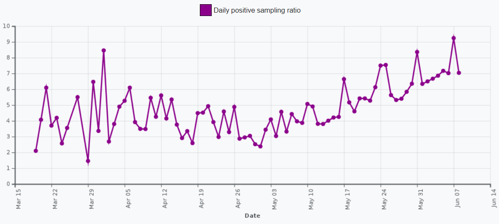
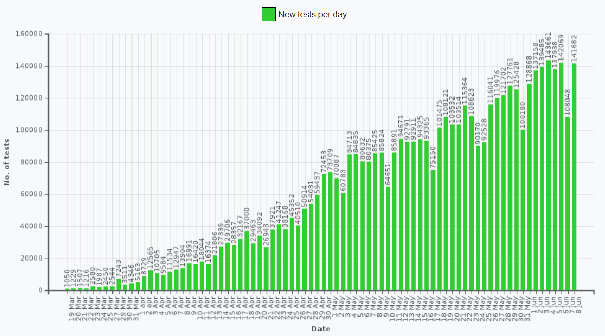
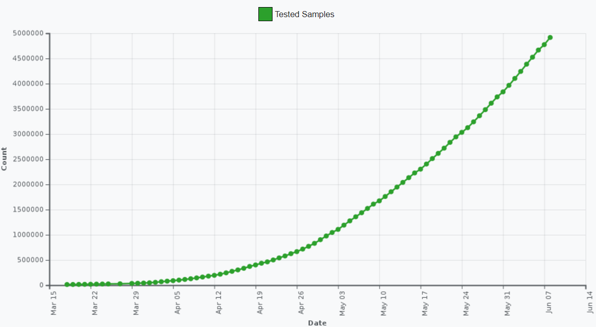
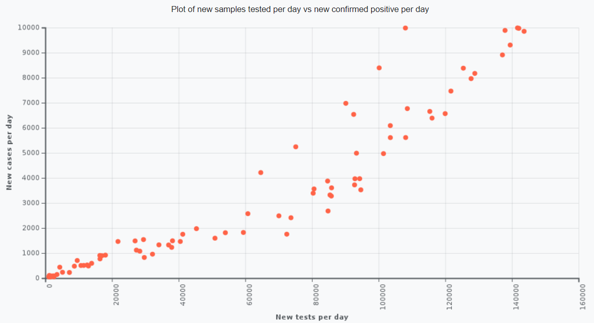

The COVID-19 pandemic in India is part of the worldwide pandemic of coronavirus disease 2019 (COVID-19) caused by severe acute respiratory syndrome coronavirus 2 (SARS-CoV-2). The first case of COVID-19 in India, which originated from China, was reported on 30 January 2020. As of 8 June 2020, the MoH&FW has confirmed a total of 256,611 cases, 124,430 recoveries (including 1 migration) and 7,200 deaths in the country.India currently has the largest number of confirmed cases in Asia, with the number of total confirmed cases breaching the 100,000 mark on 19 May and 200,000 on 3 June. India's case fatality rate is relatively lower at 2.80%, against the global 6.13%, as of 3 June.Six cities account for around half of all reported cases in the country – Mumbai, Delhi, Ahmedabad, Chennai, Pune and Kolkata. As of 24 May 2020, Lakshadweep is the only region which has not reported a case. On 22 March, India observed a 14-hour voluntary public curfew at the instance of the prime minister Narendra Modi. It was followed by mandatory lockdowns in COVID-19 hotspots and all major cities. Further, on 24 March, the Prime Minister ordered a nationwide lockdown for 21 days, affecting the entire 1.3 billion population of India. On 14 April, the PM extended the nationwide lockdown till 3 May which was followed by two-week extensions starting 3 and 17 May with substantial relaxations. Beginning 1 June the Government has started unlocking the country (barring containment zones) in three unlock phases. The United Nations (UN) and the World Health Organization (WHO) have praised India's response to the pandemic as 'Comprehensive and robust,' terming the Lockdown restrictions as aggressive but vital for containing the spread and building necessary healthcare infrastructure. The Oxford COVID-19 Government Response Tracker (OxCGRT) noted the government's swift and stringent actions, emergency policy making, emergency investment in healthcare, fiscal stimulus, investment in vaccine and drug R&D. It gave India a score of 100 for its strict response. Michael Ryan, chief executive director of the WHO's health emergencies programme noted that India had tremendous capacity to deal with the outbreak owing to its vast experience in eradicating smallpox and polio. Other commentators have also raised concerns about the economic fallout arising as a result of the pandemic and preventive restrictions.
Government of India is taking all necessary steps to ensure that we are prepared well to face the challenge and threat posed by the growing pandemic of COVID-19 the Corona Virus. With active support of the people of India, we have been able to contain the spread of the Virus in our country. The most important factor in preventing the spread of the Virus locally is to empower the citizens with the right information and taking precautions as per the advisories being issued by Ministry of Health & Family Welfare.
Look for emergency warning signs* for COVID-19. If someone is showing any of these signs, seek emergency medical care immediately
*This list is not all possible symptoms. Please call your medical provider for any other symptoms that are severe or concerning to you.
Call 91075 or 011-23978046 or call ahead to your local emergency facility: Notify the operator that you are seeking care for someone who has or may have COVID-19.
People can catch COVID-19 from others who have the virus. The disease spreads primarily from person to person through small droplets from the nose or mouth, which are expelled when a person with COVID-19 coughs, sneezes, or speaks. These droplets are relatively heavy, do not travel far and quickly sink to the ground. People can catch COVID-19 if they breathe in these droplets from a person infected with the virus. This is why it is important to stay at least 1 meter) away from others. These droplets can land on objects and surfaces around the person such as tables, doorknobs and handrails. People can become infected by touching these objects or surfaces, then touching their eyes, nose or mouth. This is why it is important to wash your hands regularly with soap and water or clean with alcohol-based hand rub. WHO is assessing ongoing research on the ways that COVID-19 is spread and will continue to share updated findings.
The outbreak has been declared an epidemic in more than a dozen states and union territories, where provisions of the Epidemic Diseases Act, 1897 have been invoked, leading to the temporary closure of educational and commercial establishments. All tourist visas have been suspended, as a majority of the confirmed cases were mainly imports.
On 3 March 2020, the Indian government stopped issuing of new visas. Previously issued visas for the nationals of Italy, Iran, South Korea, and Japan were suspended. All visas were suspended on 13 March, except for diplomatic and other official visas, as well as the visa-free travel for Overseas Citizens of India. Indians returning from COVID-affected countries were asked to be quarantined for 14 days. These measures were expanded to citizens from Europe, Gulf countries and Asian countries including Malaysia on 17–18 March. The land border with Myanmar began to be restricted on 9 March with the initiative of the state governments of Mizoram and Manipur. On 13 March, the Government of India closed passenger traffic from all neighbouring countries other than Pakistan.The traffic from Pakistan itself was closed on 16 March. Travel and registration for Sri Kartarpur Sahib was also suspended on this date.
The Union Health Ministry's war room and policy making team in New Delhi consists of the ministry's Emergency Medical Response Unit, the Central Surveillance Unit (IDSP), the National Centre for Disease Control (NCDC) and experts from three government hospitals. They are part of policy decisions to decide how coronavirus should be tackled in the country.A cluster-containment strategy is mainly being adopted, similar to how India contained previous epidemics, as well as "breaking the chain of transmission". 15 labs across India led by the National Institute of Virology (NIV), Pune, are testing for the virus, with more labs being trained, as of early March.[125] On 14 March 65 labs were named capable for testing for the virus (though as of 17 March not all are fully functional). On 14 March, scientists at the National Institute of Virology isolated a strain of the novel coronavirus. By doing so, India became the fifth country to successfully obtain a pure sample of the virus after China, Japan, Thailand and the US.[129] The Indian Council of Medical Research (ICMR) said that isolation of the virus will help towards expediting the development of drugs, vaccines and rapid diagnostic kits in the country. NIV has shared two SARS-CoV-2 genome sequences with GISAID.[131] On 16 April, China sent 650,000 testing kits to India but their use was discontinued in view of a very low accuracy (of just 5.4%). In May, National Institute of Virology introduced another antibody test kit ELISA for rapid testing, capable of processing 90 samples in a single run of 2.5 hours.
Over the month of March, multiple states across the country began shutting down schools, colleges, public facilities such as malls, gyms, cinema halls and other public places to contain the spread.
On 22 March, the Government of India announced complete lockdown in 82 districts in 22 states and Union Territories of country where confirmed cases were reported.80 cities including Delhi, Bengaluru, Chennai, Mumbai, Chandigarh and Kolkata were put under lockdown.Some states sealed their borders barring inter-state movement. On 24 March, PM Narendra Modi announced a complete 21-day national lockdown to contain the pandemic.By 6 April, the doubling rate had slowed to six days from earlier figure of three days. After his consultation with CMs and administrators of states and UTs on 11 April, PM Narendra Modi announced lockdown extension till 3 May in his address to nation on 14 April, with conditional relaxations in areas with lower spread from 20 April. On 1 May, the Government of India extended nationwide lockdown further by two weeks until 17 May. On 17 May, NDMA extended the lockdown till 31 May in all indian states. On 30 May, the MHA announced that the ongoing lockdown would be further extended till 30 June in containment zones, with services resuming in a phased manner, starting from 8 June, in other zones. It is termed as "Unlock 1" and is stated to "have an economic focus"
The Government Divided the entire nation into three zones – Green Zone, Red Zone, Orange Zone, relaxation will be allowed accordingly.
According to ICMR, 4,916,116 samples have been tested as of and 266,598 individuals have been confirmed positive.
   